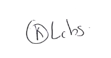

Sergio Luilly Cabrera Dorado
Soy un hombre, colombiano de años, miembro de la hermandad scout desde los 11 años. Experto en formulación de proyectos, apicultura y dirección de equipos. Conocimientos en programación, agroindustrias, preparación y conservación de alimentos.

Mi Biografia
Luilly Cabrera es un profesional con una amplia experiencia en el desarrollo de software, especialmente en el área de front-end con un enfoque en inteligencia artificial. Ha cursado 8 semestres de ingeniería agroindustrial y ha participado en seminarios de emprendimiento, lo que le ha permitido expandir sus conocimientos en áreas como Excel, Word y electricidad básica. Además, Luilly tiene un amplio dominio en diversas disciplinas culinarias, con especialización en cocina colombiana, mediterránea, italiana, argentina, parrilla y comidas rápidas, así como en la preparación de bebidas espirituosas. Es un apasionado del mundo scout, donde ha recibido formación en insignia de madera especializada en tropa. Con una filosofía que combina la tecnología, la creatividad en la cocina y el compromiso social, Luilly Cabrera continúa desarrollándose profesionalmente mientras comparte sus pasiones con los demás.

Skills
Hobbies
Experiencia
Formacion academica

Cocina Colombiana
Analisis de Bases de datos
Formacion front-end